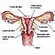

OncoGuía - Tipos de cáncer
-
 Adenoma de HipófisisGlándula situada en la silla turca
Adenoma de HipófisisGlándula situada en la silla turca -
 ColonLa última porción del aparato digestivo
ColonLa última porción del aparato digestivo -

Cuello Uterino/Cérvixparte más inferior del aparato rep. femenino
-
 Endometrio/úteroórgano hueco, situado en la pelvis.
Endometrio/úteroórgano hueco, situado en la pelvis. -
 Esófagotubo hueco que transporta los alimentos
Esófagotubo hueco que transporta los alimentos -
 Estómagositúado en la parte alta del abdomen
Estómagositúado en la parte alta del abdomen -
 GliomasTumores cerebrales que proceden de las células gliales
GliomasTumores cerebrales que proceden de las células gliales -
 MamaGlándula destinada a la producción de leche
MamaGlándula destinada a la producción de leche -
 Médula Espinalel tejido nervioso más extenso del cuerpo
Médula Espinalel tejido nervioso más extenso del cuerpo -
 Meduloblastomatumores malignos en la fosa posterior del cerebro
Meduloblastomatumores malignos en la fosa posterior del cerebro -
 MelanomaCrecimiento de los melanocitos
MelanomaCrecimiento de los melanocitos -
 MeningiomasTumor cerebral usualmente benigno
MeningiomasTumor cerebral usualmente benigno -
 Metástasis CerebralesLesiones tumorales situadas en el cerebro y que proceden de otros tumores
Metástasis CerebralesLesiones tumorales situadas en el cerebro y que proceden de otros tumores -
 No MelanomaEl tumor más frecuente del ser humano
No MelanomaEl tumor más frecuente del ser humano -
 PáncreasGlándula que participa en el proceso de la digestión
PáncreasGlándula que participa en el proceso de la digestión -
 PróstataGlándula sexual exclusiva de los varones
PróstataGlándula sexual exclusiva de los varones -
 PulmónDos pulmones (derecho e izquierdo) localizados en el tórax.
PulmónDos pulmones (derecho e izquierdo) localizados en el tórax. -
 RectoLa última porción del aparato digestivo
RectoLa última porción del aparato digestivo -
 Tumores InfantilesCada año se diagnostican 1.200 casos nuevos de tumores infantiles
Tumores InfantilesCada año se diagnostican 1.200 casos nuevos de tumores infantiles -
 Vejigaórgano situado en la parte baja de la pelvis
Vejigaórgano situado en la parte baja de la pelvis
Tumores infantiles
Introducción
El cáncer infantil es la causa principal de muerte por enfermedad en niños menores de 15 años. Cada año se diagnostican aproximadamente 1.200 casos nuevos, siendo los más frecuentes la leucemia (cáncer de las células sanguíneas) y los tumores de cerebro y sistema nervioso central, que representan más de la mitad de los nuevos casos de cáncer en niños. Dentro de los grupos étnicos, los niños blancos tienen una posibilidad más elevada de padecer cáncer.
| Tumor | Frecuencia % |
| Leucemias | 25.7 |
| SNC | 19.5 |
| Linfomas | 13.6 |
| Sistema simpático | 10.8 |
| Sarcomas | 7.4 |
| Óseos | 7.1 |
| Renales | 6.1 |
| Células germinales | 3.1 |
| Retinoblastoma | 3 |
| Hepáticos | 1.3 |
Aunque su incidencia se ha incrementado ligeramente en los últimos 30 años, la supervivencia a los 5 años tras el diagnóstico ha mejorado espectacularmente. En los años 70, la supervivencia no alcanzaba el 50% de los casos, mientras que en la actualidad el 80% de los niños están vivos a los 5 años y la supervivencia a los 10 años es casi del 75%.
Prevención
El cáncer pediátrico engloba un conjunto muy amplio de diferentes tumores. En la mayoría de ellos no es posible determinar un factor desencadenante ya que se trata de una enfermedad de origen multifactorial. Los factores ambientales que pudieran relacionarse con el desarrollo de esta patología en niños, no suelen coincidir con aquellos factores de riesgo que desencadenan cáncer en adultos.
En general, los cánceres infantiles se pueden desarrollar como consecuencia de una mutación (no heredada, es decir que no estaba presente en ninguno de los progenitores) en los genes de células que están en proceso de crecimiento. Lo más frecuente es que estos errores ocurran al azar, de forma impredecible, por lo que no existe, en la actualidad, ninguna forma eficaz de prevenirlos
Diagnóstico precoz
En la actualidad, no existe ninguna prueba ni programa de screening que permita realizar un diagnóstico precoz del cáncer en los niños.
Sin embargo, los niños pueden presentar síntomas, que deben ser consultados con el pediatra si persisten en el tiempo.
Síntomas y diagnóstico
Los síntomas de los tumores en los niños dependen del tipo de cáncer y del grado de avance de la enfermedad. Muchos de los síntomas pueden ser inespecíficos y aparecer en otro tipo de enfermedad no maligna.
En los niños con leucemia es frecuente la palidez, las infecciones y la aparición de hematomas. Cuando la localización del tumor es cerebral, el paciente puede referir cefalea, náuseas, vómitos. En ocasiones, aparecen convulsiones o alteraciones neurológicas. En los linfomas, un síntoma frecuente es el aumento de tamaño de alguna adenopatía.
Los tumores óseos y los sarcomas se manifiestan, con frecuencia, como una masa en alguna localización. Es importante que ante cualquier síntoma persistente en un niño, éste sea valorado por su pediatra que determinará la importancia del mismo y valorará la necesidad de llevar a cabo pruebas diagnósticas.
Las pruebas diagnósticas varían en función de la localización del tumor, pero es frecuente que se realice:
- Analítica y estudio de la médula ósea en leucemias y linfomas.
- TC y RM de diferentes localizaciones (cerebral, abdominal, pélvico o en una extremidad). La TC o Tomografía computerizada (escáner) emplea rayos X y genera imágenes detalladas de las distintas zonas del organismo a estudiar. En ocasiones, es preciso utilizar contraste para resaltar alguna estructura como los vasos sanguíneos. Con esta prueba, se puede ver la lesión y su situación en relación a otras estructuras. La resonancia magnética (RM): procedimiento basado en el uso de radiofrecuencias en un campo magnético, en la que se puede utilizar contraste para definir mejor los tejidos a explorar. Es una prueba muy útil para valorar lesiones cerebrales.
- Otras pruebas diagnósticas que se emplean son estudio del líquido cefalorraquídeo y la toma de biopsias.